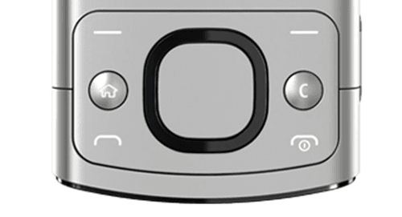
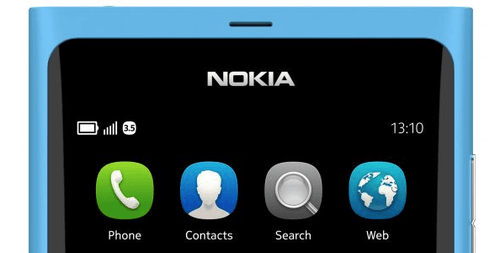
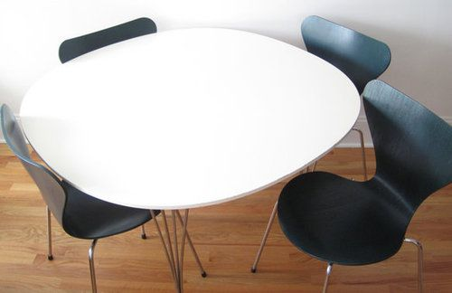

Every day at IDEO, I'm inspired by the knowledge and abilities of my associates in ways ever surprising and unexpected as they are delightful and brilliant. Much of this inspiration I gain as a direct result of the sharing of ideas, tools and techniques that help us prototype and build more quickly and effectively, a behavior the interaction designers and coders among us would likely attest that I engage in rather often.
At IDEO, we embrace the practice of knowledge sharing via email lists & hitting ‘reply-all’ without fear of repercussion to discuss this knowledge. This is a custom our ceo, tim brown, recently blogged about and one i’ve not experienced in other workplace cultures.
The chief critique of this practice asserts that one’s inbox will invariably become overcrowded and unruly with a signal to noise ratio at an all time low. However, we use google apps for our company email, and gmail allows you to mute conversion threads from which you no longer wish to receive emails. Further, you can set up filters within gmail to archive any and all communication sent either company wide or to a particular list, ensuring these emails and all associated replies bypass your inbox, altogether.
Critique stifled, problem solved.
Not long ago, I emailed our interaction design and coding lists, linking a pair of resources to assist in creating the new squircle shape of iOS 7’s icons. An excerpt from my email:
The shape is kind of a pain in the arse to create in design comps and on the web, which is why it’s particularly awesome that someone made a photoshop script to create what are now being referred to ‘squircles:’
http://blog.mikeswanson.com/post/62341902567/unleashing-genetic-algorithms-on-the-ios-7-icon
And someone else did the same w/ CSS3:
responses to these emails typically range from the thankful to the additionally insightful or helpful, often with other designers or coders sharing similar methodologies or resources to achieve whatever the topic at hand in other frameworks or languages. Every now and again, however, a uniquely inspiring reply-all lands in your inbox. And a day after I sent the above email, a colleague named Tobias Toft, an interaction designer and engineer at IDEO san francisco, afforded our collective inboxes precisely this. I share the following from self-professed ‘superellipse nerd,’ tobias, with his permission:
Warning: Superellipse nerd chiming in
Thanks Burton, it’s an interesting development. I’d hate it (but wouldn’t be surprised) if Apple managed to make it a signature shape. Many years ago at Nokia we referred to the hardware d-pad as the squircle and it was considered a signature shape for Nokia’s physical UI’s and industrial design. Later it made it into Nokia’s GUI’s (in a slightly more circular version) – most prominently with the N9 version of Maemo. Subsequently it was integrated into both S40 and S60 when Maemo was discontinued.


Anyway, in the 60’s the shape was popularized in Scandinavian furniture design, probably topping with Piet Hein's “super cirkulært” and “super ellipse” series of furniture and homeware. He was a mathematician, designer and poet and did some very interesting stuff – but that’s a different story.

The shape itself, however, is generally known as a Lamé Curve or a Superellipse. They’re easy to plot with Grapher and then export to Illustrator by saving the output as a PDF, I’ve attached a grapher file for your pleasure*, Apple seems to be using a ratio of 5.0 according to Marc Edwards . Piet Hein found a ratio of 2.5 to be the most aesthetically pleasing.
Tobias
PS. This article from 2011 talks about Microsoft being square, Nokia being squircle and Apple being roundrect.
For me, tobias’ knowledgeable, fun and comprehensive response exemplifies so much of what I love about the colleagues with whom I am surrounded and inspired by every day. Immediately, I replied and asked if I could share his knowledge more widely and he was gracious in allowing me to do so.
Thanks for making us all a little nerdier on the superellipse front, tobias.
*I’ve made the grapher file to which tobias refers available for download here.
Please update your browser to view the content of this page correctly.Update my browser